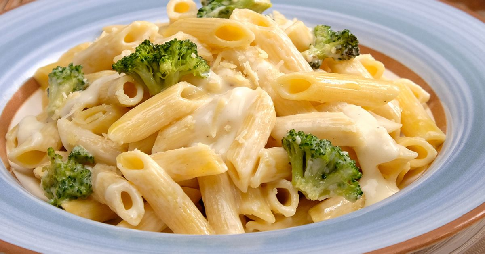

Com esta receita fácil, você pode preparar um molho branco delicioso para acompanhar massas, proporcionando um toque de sabor especial à sua refeição.
INGREDIENTES:
•1 cebola pequena picada;
•1 colher de margarina;
•1 caixa de creme de leite;
•1/2 litro de leite;
•1 colher (sopa) de amido de milho;
•1 xícara de queijo ralado;
• pimenta-do-reino a gosto;
•1 colher (sobremesa) de sal;
MODO DE PREPARO
1- Em uma panela, derreta a margarina e acrescente a cebola, o sal e a pimenta-do-reino.
2-Quando a cebola estiver bem transparente, acrescente o creme de leite e misture.
3-Dissolva o amido no leite e adicione ao molho.
4-Quando o molho estiver com uma consistência firme, desligue o fogo e acrescente o queijo, mexendo bem, para ele não grudar.